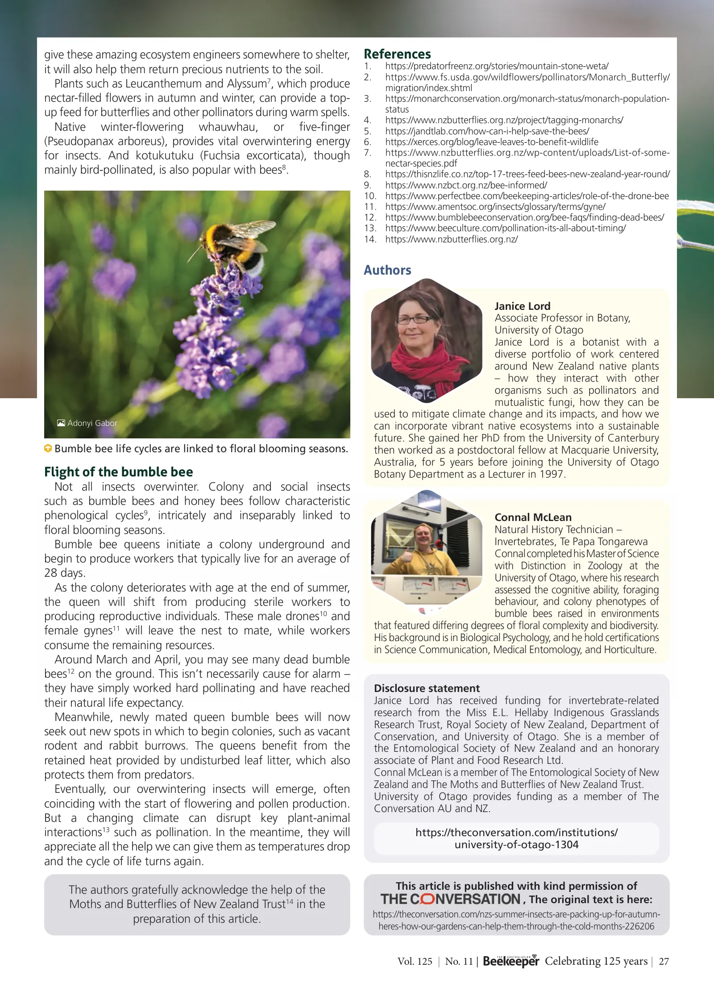

give these amazing ecosystem engineers somewhere to shelter,
it will also help them return precious nutrients to the soil.
Plants such as Leucanthemum and Alyssum7, which produce
nectar-filled flowers in autumn and winter, can provide a top-
up feed for butterflies and other pollinators during warm spells.
Native
winter-flowering
whauwhau,
or
five-finger
(Pseudopanax arboreus), provides vital overwintering energy
for insects. And kotukutuku (Fuchsia excorticata), though
mainly bird-pollinated, is also popular with bees8.
Janice Lord
Associate Professor in Botany,
University of Otago
Janice Lord is a botanist with a
diverse portfolio of work centered
around New Zealand native plants
– how they interact with other
organisms such as pollinators and
mutualistic fungi, how they can be
used to mitigate climate change and its impacts, and how we
can incorporate vibrant native ecosystems into a sustainable
future. She gained her PhD from the University of Canterbury
then worked as a postdoctoral fellow at Macquarie University,
Australia, for 5 years before joining the University of Otago
Botany Department as a Lecturer in 1997.
Connal McLean
Natural History Technician –
Invertebrates, Te Papa Tongarewa
Connal completed his Master of Science
with Distinction in Zoology at the
University of Otago, where his research
assessed the cognitive ability, foraging
behaviour, and colony phenotypes of
bumble bees raised in environments
that featured differing degrees of floral complexity and biodiversity.
His background is in Biological Psychology, and he hold certifications
in Science Communication, Medical Entomology, and Horticulture.
Flight of the bumble bee
Not all insects overwinter. Colony and social insects
such as bumble bees and honey bees follow characteristic
phenological cycles9, intricately and inseparably linked to
floral blooming seasons.
Bumble bee queens initiate a colony underground and
begin to produce workers that typically live for an average of
28 days.
As the colony deteriorates with age at the end of summer,
the queen will shift from producing sterile workers to
producing reproductive individuals. These male drones10 and
female gynes11 will leave the nest to mate, while workers
consume the remaining resources.
Around March and April, you may see many dead bumble
bees12 on the ground. This isn’t necessarily cause for alarm –
they have simply worked hard pollinating and have reached
their natural life expectancy.
Meanwhile, newly mated queen bumble bees will now
seek out new spots in which to begin colonies, such as vacant
rodent and rabbit burrows. The queens benefit from the
retained heat provided by undisturbed leaf litter, which also
protects them from predators.
Eventually, our overwintering insects will emerge, often
coinciding with the start of flowering and pollen production.
But a changing climate can disrupt key plant-animal
interactions13 such as pollination. In the meantime, they will
appreciate all the help we can give them as temperatures drop
and the cycle of life turns again.
The authors gratefully acknowledge the help of the
Moths and Butterflies of New Zealand Trust14 in the
preparation of this article.
Bumble bee life cycles are linked to floral blooming seasons.
This article is published with kind permission of
, The original text is here:
https://theconversation.com/nzs-summer-insects-are-packing-up-for-autumn-
heres-how-our-gardens-can-help-them-through-the-cold-months-226206
Adonyi Gabor
References
1.
https://predatorfreenz.org/stories/mountain-stone-weta/
2.
https://www.fs.usda.gov/wildflowers/pollinators/Monarch_Butterfly/
migration/index.shtml
3.
https://monarchconservation.org/monarch-status/monarch-population-
status
4.
https://www.nzbutterflies.org.nz/project/tagging-monarchs/
5.
https://jandtlab.com/how-can-i-help-save-the-bees/
6.
https://xerces.org/blog/leave-leaves-to-benefit-wildlife
7.
https://www.nzbutterflies.org.nz/wp-content/uploads/List-of-some-
nectar-species.pdf
8.
https://thisnzlife.co.nz/top-17-trees-feed-bees-new-zealand-year-round/
9.
https://www.nzbct.org.nz/bee-informed/
10. https://www.perfectbee.com/beekeeping-articles/role-of-the-drone-bee
11. https://www.amentsoc.org/insects/glossary/terms/gyne/
12. https://www.bumblebeeconservation.org/bee-faqs/finding-dead-bees/
13. https://www.beeculture.com/pollination-its-all-about-timing/
14. https://www.nzbutterflies.org.nz/
Authors
Disclosure statement
Janice Lord has received funding for invertebrate-related
research from the Miss E.L. Hellaby Indigenous Grasslands
Research Trust, Royal Society of New Zealand, Department of
Conservation, and University of Otago. She is a member of
the Entomological Society of New Zealand and an honorary
associate of Plant and Food Research Ltd.
Connal McLean is a member of The Entomological Society of New
Zealand and The Moths and Butterflies of New Zealand Trust.
University of Otago provides funding as a member of The
Conversation AU and NZ.
https://theconversation.com/institutions/
university-of-otago-1304
Vol. 125 | No. 11 |
Celebrating 125 years | 27